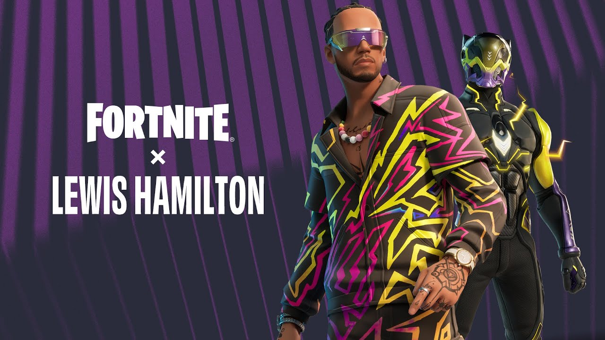
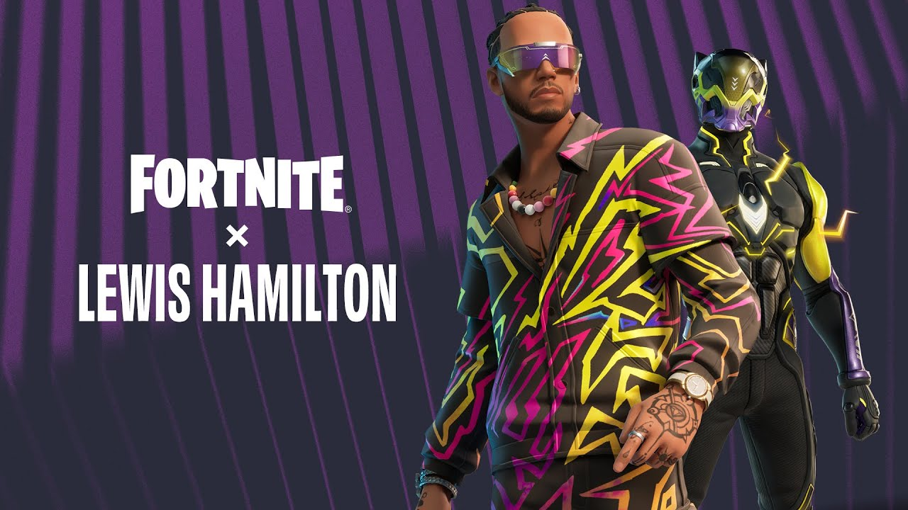

Introducción

Mi nombre es Juan Andrés Juárez Gómez. Nací el 20 de junio de 2005. Soy una persona activa, a la que le gusta el deporte y que ha pasado por situaciones que la han hecho más fuerte. Tengo valores y metas en la vida.
Mi nombre es Juan Andrés Juárez Gómez. Nací el 20 de junio de 2005. Soy una persona activa, a la que le gusta el deporte y que ha pasado por situaciones que la han hecho más fuerte. Tengo valores y metas en la vida.


Realicé mis primeros estudios en el ahora extinto kínder Little to Big. A los 5 años, mis padres decidieron inscribirme en el colegio Champagnat, donde estudié desde preparatoria hasta segundo año de bachillerato, graduándome en 2022. Desde pequeño, participé en el equipo de básquetbol y también practiqué natación. Destaco principalmente en el ámbito deportivo, habiendo recibido varios trofeos y medallas.
Al salir del colegio, me inscribí en la Universidad Anáhuac Mayab en Mérida, México, pero tuve que regresar a casa debido a problemas familiares. Finalmente, me inscribí en la ESEN en el programa de IT y actualmente estudio Ingeniería para el Desarrollo de Software y Negocios Digitales.
 


Mis intereses son variados. Me gusta el fútbol, tanto verlo como jugarlo en videojuegos. Mi deporte principal es el baloncesto, aunque tuve que hacer una pausa de 1 año y 2 meses debido a una lesión en la rodilla. También me apasionan los videojuegos, siendo FIFA y Fortnite mis favoritos.
Otra de mis pasiones son los automóviles y los aviones. Esta pasión la heredé de mi padre, quien también es un aficionado a los autos y con quien viajé en aviones desde pequeño. Me gustaría especializarme profesionalmente en la industria de los aviones Airbus o en los autos deportivos alemanes como BMW, Audi, Porsche, y Mercedes-Benz.


Actualmente, soy una persona que ha cambiado mucho, con altos y bajos en la vida que me han llevado a madurar. Aún tengo muchas metas por cumplir a mis 19 años.
Tengo tres mascotas maravillosas que son parte importante de mi vida. Aquí están algunas fotos de ellas:
Luka
Theo
Nico